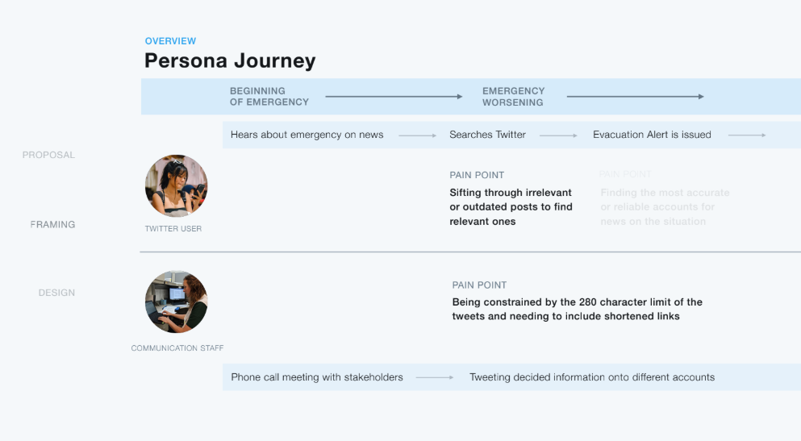

User Experience Design
Twitter Emergencies
Team: Mischa Price, Natalie Lingren, Kateryna Jones, Isabel Chan, Jasmine Kuar
Role: Videos, Copywriting, Content Strategy
"In the absence of timely and accurate information, [wildfire evacuees] turned to social media for updates; only to be confronted by misinformation.”
- BC Flood and Fire Review, 2018
We studied disaster awareness and discovered that in large scale disasters like wildfires and floods, and even in events like shootings, Twitter was a highly used resource. However we found Twitter had a lot of shortcomings when it comes to satisfying information hunting for people during emergencies. in a disaster, unofficial accounts and irrelevant information floods twitter’s pages, so someone in need of information might miss the tweet that could save their life. This led to our project framing:
How might we cut through the noise in an emergency to deliver relevant information to people as quick as possible?
To better understand the headspace someone is in while under the stress of an disaster, we developed two personas. The first represents an average twitter user looking for information during a disaster, the second represents the emergency officials looking to spread information quickly to as many endangered people as possible.
Digging deeper, and after some testing, we found that twitter is aware of their users using their platform for emergency communication, and has frameworks set up to help users from both sides communicate. However the problem still existed, and our testing showed that under the stress of a disaster situation, twitter's resources were difficult to manage. We then reframed our initial question:
How might we use Twitter’s existing resources in a way that is more user-user-centred to reduce the stress of people trying to find information during an emergency?
Our solution was to add a separate component to twitter's app that filtered verified disaster tweets from unverified ones. Our solution tackled the exact process a person goes through to see information, as well as the backend of how officials update information.
Takeaways: It was important to keep Twitter's values in mind during the project. We had to keep in mind at every step not only the value to our users, but the value to the business and brand. I learned how to design something unique within the constraints of an existing brand and platform. Twitter's conversational tone has in the past led to mass spreading of misinformation, and loss of credibility. I think our solution would succeed in providing safety to twitter users, as well as establish twitter as a truly reliable source of information.